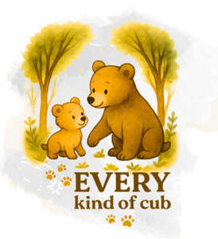

Trade Mark Journal No.2025/050 12 December 2025
UK00004302740 28 November 2025 (9,16,18,28,41)

- Class 9
- Downloadable videos; Pre-recorded videos; Downloadable video recordings; Digital music downloadable provided from MP3 internet web sites; Downloadable digital music provided from MP3 Internet web sites; Downloadable video game programs; Digital music [downloadable] provided from mp3 web sites on the internet; Prerecorded music videos; Educational software; Educational computer software; Education software; Children's educational software; Educational computer applications; Software development programs; Software; Programs (Computer -) [downloadable software]; Computer programs [downloadable software]; Computer software programs; Computer software development tools; Multimedia software; Entertainment software; Interactive software; Interactive business software; Social software; Programming software; Computer software for entertainment; Software testing software; Interactive computer software; Interactive entertainment software for use with computers; Enterprise software; Computer games programs [software]; Master of Education software; Training software; Interactive entertainment software; Collaboration software platforms [software]; Computer software [programmes]; Interactive entertainment software for use with personal computers; Software development programmes; Website development software; Computer software concerned with children's education; Software development tools; Computer programming software; Networking software; Simulation software [entertainment]; Computer software for business purposes; Science software; Computer software applications, downloadable; Downloadable computer software applications; Video games programs [computer software]; Teacher software; Media development software; Computer software for computer aided software engineering; Computer games entertainment software; Downloadable computer software; Downloadable computer software for the management of information; Web development software; Business technology software; Computer software programs for database management; Collaborative software; Community software; Machine learning software for healthcare; Student software; Downloadable computer security software; Music software; Computer software; Software programs for video games; Software reliability software; Assistive software; Computer software programs for spreadsheet management; Downloadable computer software for blockchain technology; Computer software for advertising; Downloadable educational media; Industrial software.
- Class 16
- Books for children; Books; Baby books [storybooks]; Non-fiction books; Educational books; Coloring books for adults; Colouring books; Coloring books; Comic books; Fiction books; Fantasy books; Birthday books; Poster books; Writing books; School writing books; Painting books; Printed books; Story books; Picture books; Gift books; Children's books; Travel books; Covers for books; Activity books; Cook books; Copy books; Baby memory books; Drawing books; Pop-up books; Sticker books; Scrap books; Graphic art books; Guide books; Books featuring fantasy stories; Pocket books [stationery]; Coupon books; Visitors books; Sketch books; Children's activity books; Recipe books; Storybooks; Writing or drawing books; Log books; Rule books; Sticker activity books; Stickers; Stickers [stationery]; Adhesive stickers; Stickers [decalcomanias]; Sticker albums; Decorative stickers for soles of shoes; Printed emblems [decalcomanias]; Stencils [stationery]; Adhesive pads [stationery]; Paper badges; Tapes (adhesive -) [stationery]; Labels of paper or cardboard; Stencils; Printed cardboard invitations; Placards of paper; Printed paper labels; Self-adhesive plastic sheets for lining shelves; Paper banners; Banners of paper; Stencil plates; Bookmarks; Folders [stationery]; Printed geographical maps; Maps; Printed photographs; Printed diagrams; Printed guides; Printed flyers; Printed menus; Printed paper invitations; Printed informational cards; Wall maps; Printed recipe cards; Printed answer sheets; Printed luggage labels; Printed advertising boards of paper; Printed lessons; Route maps; Maps (Geographical -); Printed survey answer sheets; Printed educational materials; Printed teaching materials; Educational and instructional material; Trading cards other than for games; Trading cards, other than for games.
- Class 18
- Back packs; Book bags; Bags; School book bags; Bags for clothes; Kit bags; Travel bags; Bags for travel; Luggage bags; Duffel bags; Tote bags; Hand bags; Game bags; Camping bags; Music bags; Hiking bags; Work bags; Grocery tote bags; Cloth bags; Bags for school; School bags; Toiletry bags sold empty; Backpacks; School backpacks; Backpacks [rucksacks]; Baby backpacks; Backpacks for carrying babies; Backpacks for carrying infants; Schoolbags; Schoolchildren's backpacks; Small backpacks; School knapsacks; Umbrellas for children; Bags for sports clothing; Rucksacks; Holdalls for sports clothing; Sports bags; Bags for sports; Satchels (School -); School satchels; Bags for campers; Sling bags for carrying infants; Sling bags for carrying babies; Back frames for carrying children; Bags for carrying pets; Duffle bags; Bags for umbrellas; Baby carrying bags; Knapsacks; Toiletry bags; Bags for carrying animals; Small rucksacks; Athletic bags.
- Class 28
- Toys, games, and playthings; Pinball games machines [toys]; Toys; Games; Toys, games and playthings for pet animals; Puzzles [toys]; Games consoles; Games (Marbles for -); Pinball games; Miniatures for use in games; Balls for games; Games (Balls for -); Play mats for use with toy vehicles [playthings]; Balls for playing games; Table-top games; Toys and playthings for pets; Toys for sandpits; Controllers for toys; Action figures [toys or playthings]; Chess games; Cards [games]; Educational toys; Gloves for games; Sports games; Electronic games; Interactive gaming chairs for video games; Toys in the form of puzzles; Action toys; Models being toys; Toys for pets; Boards games; Toys for animals; Windup toys; Radio-controlled toys; Wind-up toys; Whistles [toys]; Dart games; Toy musical boxes [play articles]; Toys for use in perambulators; Crib toys; Drawing toys; Stuffed toys; Cuddly toys; Plush toys; Fidget toys; Pet toys; Toys for dogs; Toys for infants; Toys and playthings for pet animals; Bouncing toys; Toy playsets; Toys for cats; Party games; Fantasy character toys; Plastic toys; Bath toys; Building games; Compendiums of board games; Sketching toys.
- Class 41
- Games library services; Entertainment services for matching users with computer games; Electronic games services; Organisation of quizzes, games and competitions; Online game services through mobile devices; Providing online videos, not downloadable; Providing online video games; Publication of multimedia material online; Online gaming services; Online entertainment services; Production of videos; Services for the showing of video recordings; On-line computer games; Video game services; Rental of video games; Online education services.
Megan Bonnick